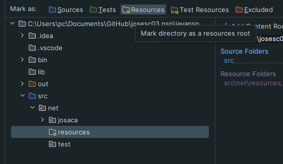

import java.io.BufferedReader;
import java.io.InputStreamReader;
import java.io.IOException;
public class Main {
public static void main(String[] args) {
// Crear el BufferedReader para leer desde la consola
BufferedReader reader = new BufferedReader(new InputStreamReader(System.in));
try {
// Solicitar al usuario que ingrese un texto
System.out.print("Escribe algo: ");
String entrada = reader.readLine();
// Mostrar lo que el usuario escribió
System.out.println("Lo que escribiste: " + entrada);
} catch (IOException e) {
System.out.println("Hubo un error al leer la entrada.");
} finally {
try {
// Cerrar el BufferedReader
reader.close();
} catch (IOException e) {
System.out.println("Error al cerrar el BufferedReader.");
}
}
}
}
import java.io.BufferedReader;
import java.io.InputStreamReader;
import java.io.InputStream;
import java.io.IOException;
public class Main {
public static void main(String[] args) {
// Obtener el archivo desde la carpeta resources
InputStream inputStream = Main.class.getResourceAsStream("/miarchivo.txt");
// Verificar que el archivo se ha encontrado
if (inputStream == null) {
System.out.println("El archivo no se encontró.");
return;
}
// Leer el archivo usando BufferedReader
try (BufferedReader reader = new BufferedReader(new InputStreamReader(inputStream))) {
String line;
while ((line = reader.readLine()) != null) {
System.out.println(line);
}
} catch (IOException e) {
e.printStackTrace();
}
}
}
Vamos a File | Proyect Structure
Seleccionamos la carpeta y la ponermos como Resource Root